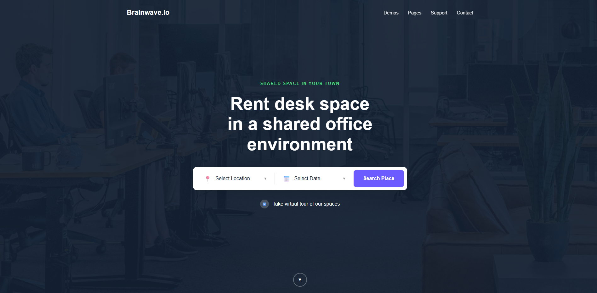
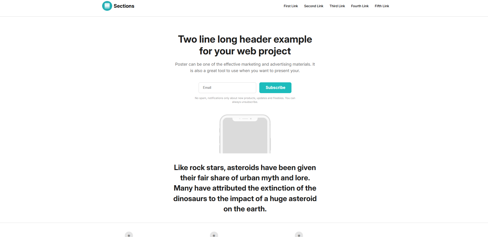
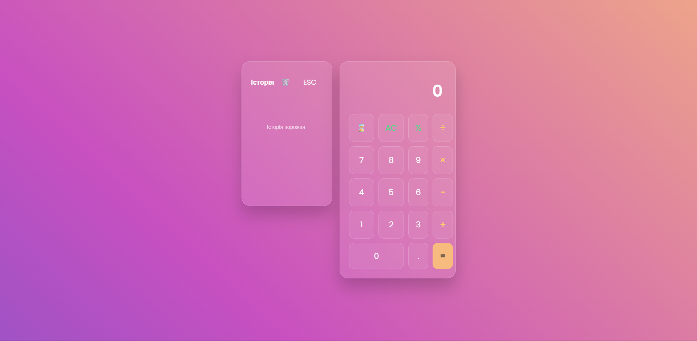

Hi, I'm Yevheniy 👋
Я фронт-енд розробник, основний стек — React. Роблю сайти та веб-додатки так, щоб вони були швидкі, зручні і нормально виглядали на будь-якому пристрої. Моє головне завдання — створювати інтерфейси, які не тільки працюють, а й приємні у використанні. Моя найкраща навичка - це вмінння ідеально відтворювати макети, тому що я завжди переконуюсь, що все виглядає саме так, як задумано дизайнером.
Крім фронт-енду, маю досвід із C# — писав програми на ньому, тому добре розумію логіку роботи додатків не тільки зі сторони інтерфейсу. Також працюю з Python, використовуючи його для різних невеликих проєктів.
Окремо маю досвід у дизайні: працюю з Photoshop, Illustrator і Figma, тому можу не тільки зверстати макет, а й сам його зробити або допрацювати. Тож я досить гнучка особистість в плані проєктування.
В цілому люблю розробку і постійно практикуюсь — випробовую нові підходи, інструменти і намагаюсь робити кожен проєкт трохи кращим, ніж попередній.
Цікавитесь мною? Ось трохи про мене:
Я фронт-енд розробник, якому реально подобається те, що він робить. Основний фокус — створення веб-додатків на React, де важливо не тільки щоб усе працювало, а й щоб виглядало адекватно і було зручно для користувача.
Мені цікаво поєднувати технічну частину з візуальною — щоб інтерфейс був не просто функціональним, а й приємним. Звертаю увагу на деталі, читаємість коду і продуктивність, бо вважаю, що це база нормального продукту.
Почав свій шлях у розробці кілька років тому і з того часу постійно пробую нове, вчуся і беруся за різні задачі. Зараз працюю з сучасним стеком і намагаюсь робити проєкти, які виглядають і працюють на рівні.
Окрім фронтенду, маю досвід з C# — писав програми і трохи глибше розібрався в логіці додатків. Також використовую Python для різних задач. Це допомагає не мислити тільки «версткою», а бачити картину ширше.
Плюс маю досвід у дизайні: працюю з Figma, Photoshop і Illustrator. Можу як реалізувати готовий макет, так і сам щось спроєктувати або підправити. Завдяки цьому краще розумію, як зробити інтерфейс не тільки робочим, а й нормальним на вигляд.
І нарешті, ось тут є деякі методи, як можна зі мною зв'язатися через Інстаграм чи GitHub.
Мої сильні сторони.
- Логіка вміння будувати та організовувати важкі структури, знаходячи порядок в хаосі, та їх креативно відтворювати
- Адаптивність, швидке засвоєння нової інформації
- Вміння працювати в команді та проявляти ініціативу
- Маю значний досвід в різних сферах програмування
Some of the noteworthy projects I have built:



Basic Calculator App
Універсальний калькулятор, який працює як у браузері, так і на різних пристроях. Простий та зрозумілий інтерфейс, швидка робота та адаптація під мобільні й десктопні екрани. Приємний дизайн та круті фішки, які роблять його не просто інструментом, а й приємним у використанні повноцінним додатком.
Nice things people have said about me:
We approached him to redesign our company website, since the previous one felt outdated and wasn’t performing well. From the beginning, communication was clear — we understood the structure, timeline, and what to expect. What we really appreciated was the flexibility. We made a few changes during the process, especially around layout and content, and everything was handled without any issues. He explained technical things in a way that was easy to understand, which helped a lot. The final result is a clean, modern website that loads fast and works well across devices, especially mobile. Since launching, we’ve noticed that users spend more time on the site and navigation feels much smoother. Overall, a solid experience. Reliable, easy to work with, and delivers what’s promised.
We needed a landing page for marketing campaigns that would actually convert, not just look good. We’ve worked with others before, so we were a bit cautious going into this. During the process, it wasn’t just about development — there was also input on structure, content placement, and user flow, which made a big difference. We adjusted texts and a few sections along the way, and everything was handled quickly. After launch, the page felt more focused and clear. It performs better than our previous attempts, and we started getting more consistent inquiries. It’s not magic, of course, but definitely a noticeable improvement. Happy with the outcome and the collaboration.
Our goal was to build a calculator that works smoothly on both desktop and mobile, with a clean and simple interface. During development, there were a few moments where we needed to refine the calculation logic, and everything was discussed and adjusted without delays. It didn’t feel like just “following instructions” — there was actual involvement in understanding the problem. The final result is a reliable and easy-to-use tool. We tested it across multiple devices, and it works consistently everywhere. It does exactly what we needed, and we’ve been using it daily since.